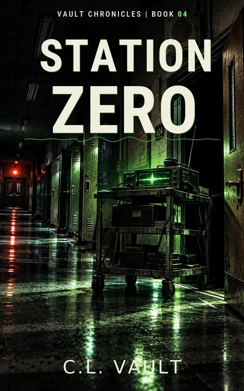

Station Zero
Vault Chronicles #4
The radio was supposed to listen. Then something answered.
Kindle Unlimited reader? Membership eligibility for individual books is shown on Amazon. The format links above are paid affiliate links.
Purchase links open Amazon. Format availability is taken from the public catalog record.
What is on file
The radio was supposed to listen.
Then something answered.
It started with a discarded dog kennel, a homemade antenna, and a signal that shouldn't exist.
Priya thought she could isolate strange radio transmissions above Harbor City. Jace was willing to help. El would have preferred a hobby that didn't involve supernatural equipment.
Then the numbers began.
Read the complete filed description
A cold voice. Impossible frequencies. Instructions nobody remembers asking for.
And beneath the static, something else is trying to speak.
DO NOT TURN PAST NULL.
When the signal begins calling the children by name, Jace, Priya, El, and Dex discover that the danger isn't coming from some distant transmitter.
It's already inside Oakhaven Middle School.
Lockers open without hands. Printers produce documents nobody requested. A metal cart begins rolling through empty corridors. And behind the locked door of Room 104, something is preparing for an audience.
ROOM 104. 07:40. LISTENER CONFIRMED.
With the school's systems turning against them, the kids must rely on handwritten rules, chalk marks, outside air, and Mr. K, a custodian who knows that some doors must be locked twice.
But the station is learning.
Every command is an invitation. Every response is permission. And every door is another chance to become the hinge.
The signal doesn't need you to believe in it.
It only needs you to answer.
Station Zero is Book 4 of The Vault Chronicles, a darkly funny science-fiction horror adventure set in the interconnected Harbor City universe. Perfect for readers ages 9-12 who enjoy creepy mysteries, strange technology, clever young heroes, and supernatural rules that matter.
DO NOT ANSWER THE STATIC.
Further material may surface.
No connected records are currently listed for this entry. Connections are added only when the archive can support them, and not merely because two stories share a city.
Request filing notices ↗